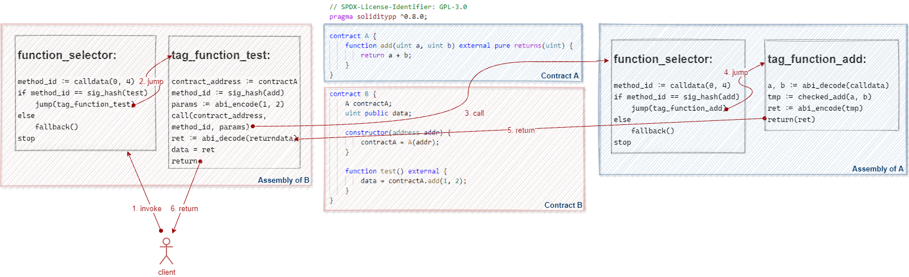
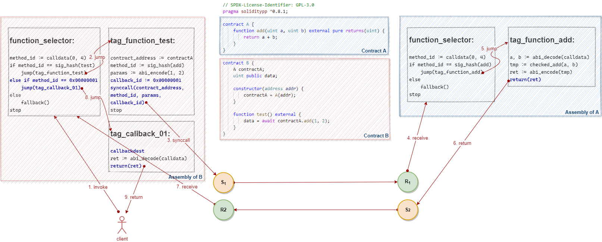

Await Operator
We covered the await operator in chapter Promise and Await. Let us look at how it is implemented in Vite.
Design Objectives
Let's see a piece of code to know what specific work needs to be done by the compiler and VM:

In summary, there are the following tasks: * To generate callback entries for each synchronous call automatically at compile time. * To initiate a callback request when the result is returned. * To maintain execution context during function invocations and callbacks.
Solidity Compiler and EVM
Before starting, let's take a look at the output from Solidity compiler for an example.
Pseudo assembly code for contract A:
function_selector:
method_id := calldata(0, 4)
if method_id == sig_hash(add)
jump(tag_function_add)
else
fallback()
stop
tag_function_add:
a, b := abi_decode(calldata)
tmp := checked_add(a, b)
ret := abi_encode(tmp)
return(ret)
Pseudo assembly code for contract B:
function_selector:
method_id := calldata(0, 4)
if method_id == sig_hash(test)
jump(tag_function_test)
else
fallback()
stop
tag_function_test:
contract_address := contractA
method_id := sig_hash(add)
params := abi_encode(1, 2)
call(contract_address, method_id, params)
ret := abi_decode(returndata)
data = ret
return
I use an anatomy diagram to show the control flow:

As shown by the red arrows in the diagram, the EVM executes external function calls through the call and return instructions.
The Solidity compiler will create a piece of code called function selector for each contract that includes the entries to interface functions of the contract at compile time.
When executing a message call to a contract, EVM extracts the first four bytes from calldata and compare against the method id of each function, then jump to the definition of a corresponding function and keep executing if they match. Otherwise, jump to the fallback function either defined by user or automatically created by the compiler.
When the call instruction gets executed, the EVM will retrieve the callee's address and load the callee’s code from the address and execute the code in an independent context.
When the return instruction gets executed, the EVM will place the result of the execution into the memory and exits from the callee's code, and then keep executing the remaining code of the caller.
Solidity++ Compiler
Now let's try to extend the functionality of the Solidity compiler, and introduce the following new features:
- To generate a callback entry, the compiler needs to traverse all
awaitexpressions in the contract at compile time, add a tag to each position immediately after theawait, and add it to the function selector as a callback entry. - To initiate a callback request when the result is returned, we need to re-implement the
returninstruction in the Vite VM to initiate a send transaction with type ofSendCallback. - To maintain execution context, two new instructions
synccallandcallbackdestneed to be introduced into the Vite VM.
The compiler places a synccall instruction at each synchronous call. When the VM executes the synccall instruction, it initiates a send transaction with type of SendSyncCall and persists the execution context into the local database.
Similarly, the compiler places a callbackdest instruction at each callback. When the VM executes the callbackdest instruction, it restores the execution context from the local database and then resumes execution.
This design allows the compiler to generate code that can run on an asynchronous VM for contracts written in a programming language similar to Solidity.
The example will be compiled to the following code:
Pseudo assembly code for contract A:
function_selector:
method_id := calldata(0, 4)
if method_id == sig_hash(add)
jump(tag_function_add)
else
fallback()
stop
tag_function_add:
a, b := abi_decode(calldata)
tmp := checked_add(a, b)
ret := abi_encode(tmp)
return(ret)
Pseudo assembly code for contract B:
function_selector:
method_id := calldata(0, 4)
if method_id == sig_hash(test)
jump(tag_function_test)
<strong>else if method_id == 0x00000001
jump(tag_callback_01)</strong>
else
fallback()
stop
tag_function_test:
contract_address := contractA
method_id := sig_hash(add)
params := abi_encode(1, 2)
<strong>callback_id := 0x00000001
synccall(contract_address, method_id, params, callback_id)</strong>
stop
<strong>tag_callback_01:
callbackdest
ret := abi_decode(calldata)
return(ret)
Again, let's put these in an anatomy diagram:

The assembly code in blue is generated by the Solidity++ compiler specifically for the Vite VM.
The orange and green circles represent the send (request) transaction and receive (response) transaction initiated by the Vite VM, respectively.
As we can see, the compiler translates each await expression into a set of instructions in the same pattern: inserting a synccall instruction, a stop instruction, a jump dest tag (a jumpdest instruction), and a callbackdest instruction.
Essentially, the Vite VM treats the synccall instruction as an interrupt, which is a request for the VM to interrupt currently executing code, save its context, and initiate an asynchronous request transaction.
Correspondingly, before receiving a callback and resuming execution, the execution context needs to be restored by executing the callbackdest instruction.
This pattern is known as context switch. In a multi-task system, it refers to the process of storing the system state for a task, so that task can be paused and resumed later.